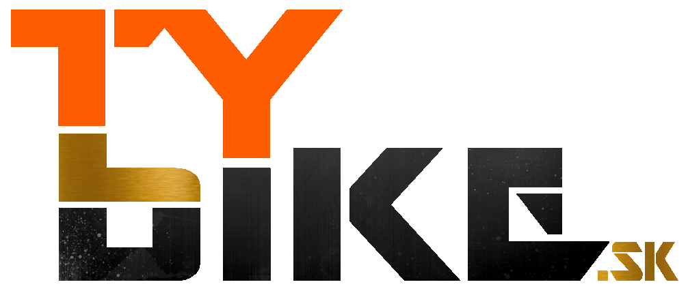
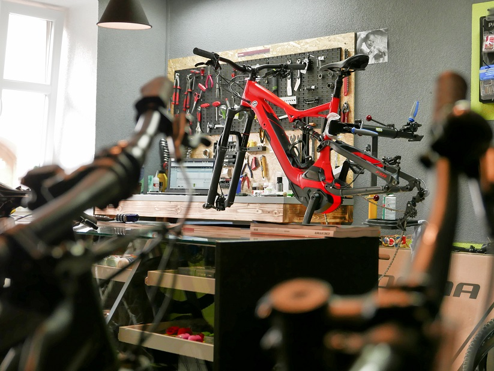
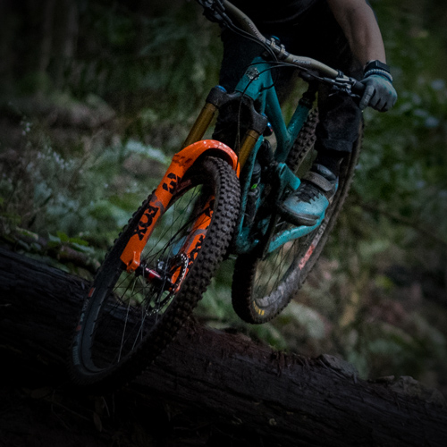
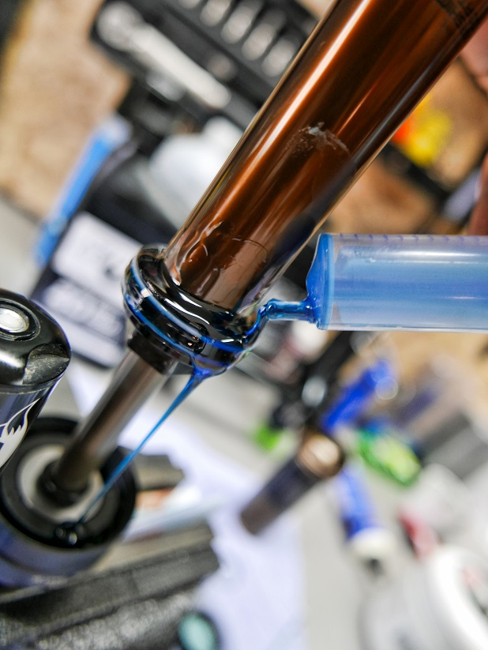
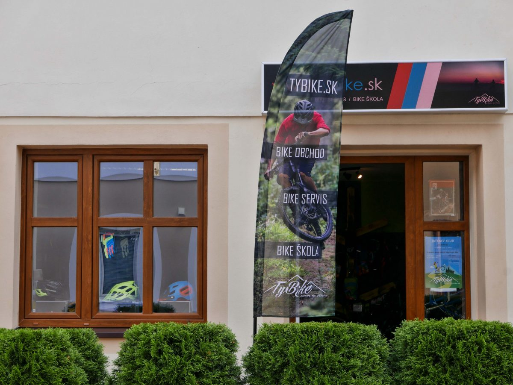

Objednať servisServis · predaj · poradenstvo
Servis bicyklov a elektrobicyklov, suspension servis a starostlivo vybraná cyklo výbava v Starej Ľubovni. S priateľským prístupom a osobným poradenstvom.
Servis
Prehľadne, s cenami „od“. Presné ceny a objednanie servisu cez jednoduchý formulár.

Bosch eBike servis, diagnostika od 15 €, servis motora od 40 €.
od 15 €
Suspension servis – opäť ako z továrne.
od 38 €
Plynulosť odpruženia pod kontrolou.
od 28 €
Reťaz, kazeta, prehadzovačka – aby šlo všetko hladko.
od 12 €Ponuka
Ukážka vychádza z produktov a cien na Vašom súčasnom webe. Bicykle, brzdy aj detské sedačky prehľadne na jednom mieste.
Bicykle
O nás
Dávate prednosť osobnému prístupu a profesionálnemu poradenstvu pred bezduchým nákupom na internete? Navštívte Tybike – centrum v Starej Ľubovni.
Na bicykle zakúpené u nás poskytujeme dvojročný bezplatný servis. Predávame len starostlivo vybrané produkty, ktoré sú zárukou spokojnosti.
KontaktKontakt
Otváracia doba (prestávka na obed 12.00 – 13.00)
Po, Ut, Št, Pia: 9.00 – 16.00
St: 13.00 – 17.30